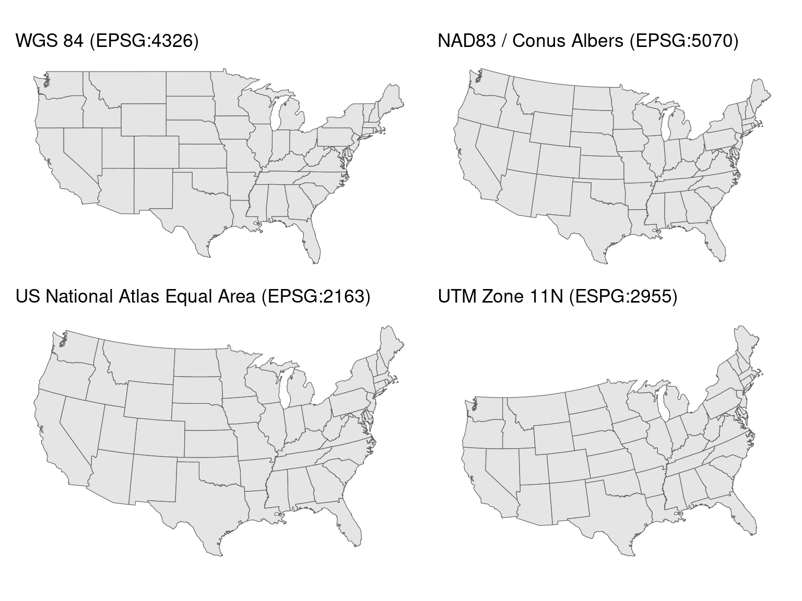
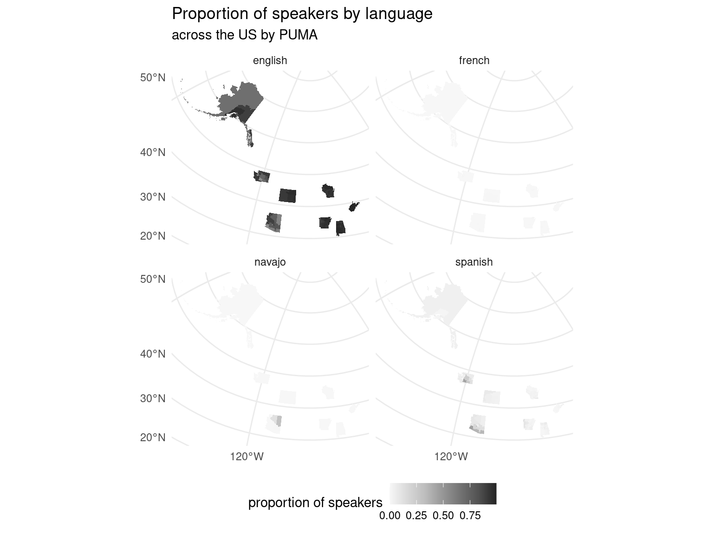
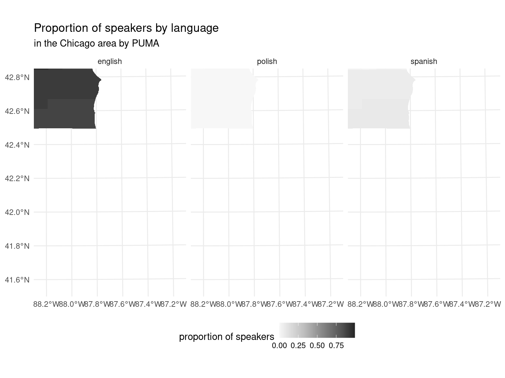
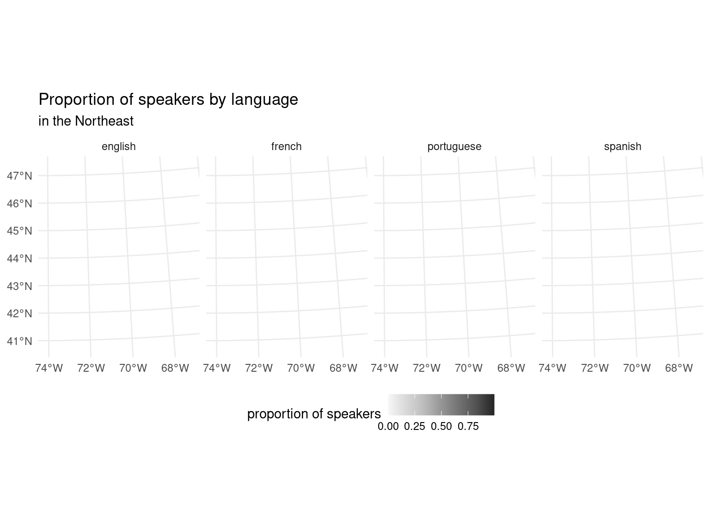

register_scalar_function(
name = "str_to_sentence_udf",
function(context, x) {
stringr::str_to_sentence(x)
},
in_type = schema(
x = string()
),
out_type = string(),
auto_convert = TRUE
)8 Advanced Topics
8.1 User-defined functions
We described how to use functions in dplyr pipelines in Section 4.4, but what if you want to use a function which doesn’t have an arrow binding?
In this case, you can create a user-defined function (UDF). User-defined functions allow arrow to use functions that don’t have Acero bindings, by calculating the results in your R session instead.
There is some additional processing overhead here because some of the calculation is being done by your R session and not by Acero, but it’s a helpful tool to have in these circumstances.
You can create a UDF by using the function register_scalar_function(). Let’s say we want to create a UDF which wraps the stringr function str_to_sentence(), which doesn’t have an Acero equivalent. Here’s an example of how it would look.
Let’s walk through that one part at a time. The first thing we need to do is define the name we’d like to use to call the function later—in this case, str_to_sentence_udf. Next, define the function itself. The first argument must always be context—this is used by the C++ code to store metadata to help it convert data between R and C++, but you don’t need to do anything here manually other than name it as the first argument to your function. Next, define an argument which will be the columns in your dataset to use in the calculation, and any other values you need. In our case, we want the column representing the original string, which we’ve called x. The body of the function itself is identical to when we defined it as an R function. The parameters in_type and out_type control the arrow data types of the input and output columns. Here, we pass in a named list of data types to in_type, and a data type to out_type. The auto_convert argument controls whether arrow automatically converts the inputs to R vectors or not. The default value FALSE can be used when working with R6 objects, but as we’re working in an arrow dplyr pipeline here, we’ll set it to TRUE. Let’s take a look at how this works with our data.
pums_person |>
select(SOCP) |>
mutate(SOCP = str_to_sentence_udf(SOCP)) |>
head() |>
collect()UDFs only work on scalar functions: functions which take one row of data as input and return one row of data as output. For example, you could create a UDF which calculates the square of a number, but you can’t create one which calculates the median value in a column of data. These functions also cannot depend on other values, so you can’t write a UDF which implements lag() or lead() which calculate a value based on the previous or next row in the data.
Because the UDF code is run in your R session, you won’t be able to take advantage of some of the features of arrow, such as being able to run code on multiple CPU cores, or the faster speed of executing C++ code. You’ll also be slowed down a little by the fact that arrow has to convert back and forth between R and arrow, and R is single-threaded, so each calculation must be run one at a time instead of allowing parallelisation.
8.1.1 How does all of this work under the hood?
The workflow for writing and using UDFs can feel a bit clunky, as it’s pretty different to how we typically work with data in R; for example, we don’t normally have to specify input and output types, or just work on 1 row of data at a time.
 The extra steps needed are because we are working more directly with Acero, the part of the Arrow C++ library that runs the data manipulation queries, and as Acero is written in C++ we have to make sure we are giving it the correct information to work with.
C++ is strongly typed, which means that when a variable is created, you also have to declare its type, which cannot be changed later. This is quite different to R, where, for example, you can create an integer variable which later becomes a double. In Acero, the fact that C++ variables require a type declaration means that Acero functions can only run on data where the data types in the columns perfectly match the data types specified for the function parameters when the function is being defined. What this means is that when we write a UDF, we need to specify the input and output types, so that the code under the hood can properly create the correct C++ function that can run on those data types.
Another thing that might seem unusual is that UDFs are limited to processing one row at a time. It’s pretty common in R to work with vectorized functions—those that can operate on multiple rows at the same time—and there are lots of places in Arrow where things are designed to be able to be run in parallel. So why not here? The answer is memory management. When Acero is processing queries, it avoids reading all of the data into memory unless it’s absolutely necessary; for example, sorting data in row order requires Acero to pull the full column into memory to be able to determine the ordering. Usually though, if you’re reading a dataset, doing some processing, and then writing it back to disk, this is done one piece at a time; Acero monitors the available memory and how much memory is being used and then reads and writes to disk in chunks that won’t exceed these limits. This concept is called “backpressure”, a term which originally was used to describe controlling the flow of liquid through pipes! In this context, backpressure means that if the queue of data that is waiting to be written after processing is at risk of growing too large for the available memory, Acero will slow down how much data is being read in, to prevent using too much memory and crashing. For compatibility with this piece-wise reading and writing, UDFs need to be able to operate in smaller chunks of data, which is why they can only use scalar functions and run on one row of data at a time.

Most of the time you don’t need to worry about these internal details of Acero! However, when working with UDFs, we’re working a lot closer to Acero’s internals, and need to step into these deeper waters.
8.2 DuckDB
Although arrow implements a lot of the dplyr API, you may want to work with functions from other packages which haven’t been implemented in arrow or can’t be written as UDFs. For example, if you want to change the shape of your data, you might want to use tidyr::pivot_longer(), but this is not yet supported in arrow.
library(tidyr)
pums_person |>
group_by(location) |>
summarize(max_commute = max(JWMNP, na.rm = TRUE), min_commute = min(JWMNP, na.rm = TRUE)) |>
pivot_longer(!location, names_to = "metric")Error in UseMethod("pivot_longer"): no applicable method for 'pivot_longer' applied to an object of class "arrow_dplyr_query"Don’t worry though! We mentioned that arrow is designed with interoperability in mind, and we can take advantage of that here. The duckdb package allows working with large datasets, and importantly in this case, has an implementation of pivot_longer().
In our example here, we can pass the data to duckdb, pivot it, and return it to arrow to continue with our analysis.
pums_person |>
group_by(location) |>
summarize(max_commute = max(JWMNP, na.rm = TRUE), min_commute = min(JWMNP, na.rm = TRUE)) |>
to_duckdb() |> # send data to duckdb
pivot_longer(!location, names_to = "metric") |>
to_arrow() |> # return data back to arrow
collect()We start off with an Arrow Dataset, which is turned into a dataset query when we call summarize(). We’re still using lazy evaluation here, and no calculations have been run on our data.
When we call to_duckdb(), this function creates a virtual DuckDB table whose data points to the Arrow object. We then call pivot_longer(), which runs in duckdb.
Only when collect() is called at the end does the data pipeline run. Because we are passing a pointer to where the data is stored in memory, the data has been passed rapidly between Arrow and DuckDB without the need for serialization and deserialization resulting in copying things back and forth, and slowing things down. We’ll look under the hood in Chapter 9 to show how Arrow enables this form of efficient communication between different projects.
The arrow and duckdb R packages have a lot of overlapping functionality, and both have features and functions the other doesn’t. We choose to focus on the complementarities of the two packages, both for practical and personal reasons. Since Arrow is focused on improving interoperability, we tend to take a “yes, and…” approach to solutions. We also have enjoyed collaborating with the DuckDB maintainers over the years and appreciate the work they do.
In any case, it would be hard to make a clear, simple statement like “use arrow for X and duckdb for Y,” if for no other reason than that both projects are in active development, and any claim would quickly become outdated. For example, arrow has historically had better dplyr support than duckdb because duckdb relied on dbplyr to translate dplyr verbs into SQL, while the arrow developers invested heavily in mapping R functions to Acero functions for a higher fidelity translation. On the other hand, Acero does not currently have a SQL interface. But there is no technical limitations preventing duckdb from improving dplyr support—and by the time you are reading this, they very well may have![^duckplyr]—nor from there being a SQL interface to arrow.
[^duckplyr: Indeed, see duckplyr.]
For most applications, you could use either arrow or duckdb just fine. But, if you do encounter cases where one package supports something the other doesn’t, the smooth integration between arrow and duckdb means can leverage the best of both. For example, suppose you want to use SQL to query a bucket of Parquet files in Google Cloud Storage, as in our example in Chapter 7. At the time of writing, the arrow R package doesn’t support SQL, and DuckDB doesn’t support GCS. You could use arrow to connect to GCS and read the Parquet files, and then duckdb to run the SQL.
To run SQL, we need to specify a table_name in to_duckdb() so that we can reference it in our SQL statement. Then we use dbplyr::remote_con() to pull out the duckdb connection, followed by DBI::dbGetQuery() to send the query and return the result. Something like this:
open_dataset("gs://anonymous@scaling-arrow-pums/person/") |>
to_duckdb(table_name = "pums8") |>
dbplyr::remote_con() |>
DBI::dbGetQuery("
SELECT
year,
SUM(AGEP * PWGTP) / SUM(PWGTP) AS mean_age
FROM (SELECT * FROM pums8 WHERE location = 'wa')
GROUP BY year")To reiterate: for most workloads of the nature we’ve been focusing on in this book—analytic queries on larger-than-memory datasets—either package would be a great choice. We like both, and we are excited to watch them become even better going forward. Your choice is a matter of preference more than anything. You may observe subtle differences in the user interface (the functions and arguments), or the documentation, or user and developer communities, that may lead you to prefer one or the other. And as we have shown, you can easily complement one with the other when you need, so it isn’t a choice that locks you into one world or another.
8.3 Extending Arrow and Geospatial Data
At this point, we’ve seen that the Arrow specification covers a wide range of data types which are commonly encountered in data storage systems, to maximize interoperability. That said, there are always going to be more data types out there for specialist uses.
8.3.1 Extension Types
One example of specialist data types is geospatial data.
Accurate representations of metadata are important with geospatial data. There are different coordinate reference systems (CRS) which can be used to represent geospatial data, and knowing which one has been used is crucial when combining data from multiple sources.

Saving geospatial data to Arrow format isn’t as simple as taking the data and mapping values to the equivalent Arrow data types. Many geospatial applications have custom data types used to describe the location and shape being represented in the data. These are known as geometries, and can be defined using points, lines, polygons, and other things. These geometries are often stored along with their associated attributes, descriptive information relating to them.
Although these non-standard data types don’t have direct Arrow equivalents, they can be implemented using extension types. Extension types allow you to create custom predefined data types. For example, you could have a location data type for which each value consists of a latitude and longitude float value. That said, there’s a huge range of possibilities for representing geospatial data, and using standardized formats can speed things up when sharing data between platforms.
8.3.2 Arrow format with existing storage formats
There are a multitude of different systems for working with geospatial data. Many of the challenges of geospatial data mirror the challenges found working with larger datasets in general: the need for efficient interchange between systems, performance issues on large, complex, or multi-file datasets, and different implementations of overlapping ideas.
8.3.3 GeoParquet
GeoParquet was designed to address these issues. GeoParquet provides a standard format for storing geospatial data on disk and can be used with arrow to then represent geospatial data in-memory. The GeoParquet format allows geospatial data to be stored in Parquet files. While it was already possible to store data in Parquet files and have lossless roundtripping between R and Parquet, GeoParquet has the added advantage of being a standardized format for this in the form of a file-level metadata specification.
Working with data in GeoParquet format allows people to take advantage of the same benefits that come with working with any data in Parquet format; the row and column chunk metadata which is an inherent part of Parquet means that filtering on this data can be done without needing to read all data into memory. Parquet’s encoding and compression means that GeoParquet files tend to take up less space on disk than similar formats.
Arrow can read GeoParquet files and perserve the metadata necesary to work with geospatial data efficiently. At the time of writing, there is also a nascent project called GeoArrow designed to make interroperation even easier and more efficient. GeoArrow aims to use the formats and approach of GeoParquet, so should be very similar.
8.3.3.1 GeoParquet data
The GeoParquet specification has 2 components: the format of the metadata and then the format of the data itself. There are two levels of metadata:
- file-level metadata which contains information about the version of the GeoParquet specification that the saved data conforms to and which column is the primary geometry column
- column-level metadata about the individual geometry columns
To make this concrete, we will use geospatial definitions for PUMAs (we will discuss what these are in more detail in Section 8.3.5). This Parquet file has a number of standard columns along with one column, geometry, that includes the geospatial specifications: in this case, polygons and multipolygons, which are the shapes of the PUMAs.
# Read in the puma geoparquet, mark it as such with SF
PUMA <- arrow::read_parquet("data/PUMA2013_2022.parquet", as_data_frame = FALSE)8.3.3.2 Column-level Metadata
The column-level GeoParquet metadata stores 2 different types of information:
- What kind of geometry is represented in the column, e.g. point, polygon, linestring etc
- Further metadata about that column, for example the CRS.
8.3.3.3 Data format
GeoParquet specifies 2 different ways of representing geometry data: serialized encoding and native encodings. Native encodings are where this data is stored in Arrow data structures. Serialized encodings are where data is stored in existing geospatial formats. Well-known binary (WKB) data is converted into Arrow Binary and LargeBinary data and Well-known Text (WKT) as Arrow Utf8 or LargeUtf8. This is part of the GeoParquet specification to ensure that this metadata can be preserved without needing to fully convert to the native encoding; however, it can be slower to work with.
Native encoding allows people to full take advantage of working with Arrow data types and capabilities. It provides concrete Arrow data structure to store geometry data in. For example, co-ordinates are stored in one of two Arrow structures. The “separated” approach saves coordinate values in separate Arrow Arrays; one for x values, and one for y values. The “interleaved” approach saves co-ordinate values in a FixedSizeList, and allows x and y values to be stored in an alternating pattern. Other types of geometries are stored in Arrow Arrays or nested ListArrays with a given structure.
For our example, most of the columns are standard types we’ve seen already. But the geometry column is the type binary and specifically the WKB type. Though this looks complicated, it’s very similar to other types: the column is an array of values, effectively a vector in R. The difference is that instead of containing data that are one string per row (that is: UTF8 encoded bytes), this data is one chunk of binary data per row. This binary data is WKB data, which packages like sf can understand.
schema(PUMA)Schema
location: string
STATEFIP: string
YEAR: int32
PUMA: string
GEOID: string
NAMELSAD: string
MTFCC: string
FUNCSTAT: string
ALAND: double
AWATER: double
INTPTLAT: string
INTPTLON: string
geometry: binary
__index_level_0__: int64
See $metadata for additional Schema metadataThere is also metadata about this column. The most important thing that we care about here is the CRS.
schema(PUMA)$metadata$geo[1] "{\"primary_column\": \"geometry\", \"columns\": {\"geometry\": {\"encoding\": \"WKB\", \"crs\": {\"$schema\": \"https://proj.org/schemas/v0.7/projjson.schema.json\", \"type\": \"GeographicCRS\", \"name\": \"NAD83\", \"datum\": {\"type\": \"GeodeticReferenceFrame\", \"name\": \"North American Datum 1983\", \"ellipsoid\": {\"name\": \"GRS 1980\", \"semi_major_axis\": 6378137, \"inverse_flattening\": 298.257222101}}, \"coordinate_system\": {\"subtype\": \"ellipsoidal\", \"axis\": [{\"name\": \"Geodetic latitude\", \"abbreviation\": \"Lat\", \"direction\": \"north\", \"unit\": \"degree\"}, {\"name\": \"Geodetic longitude\", \"abbreviation\": \"Lon\", \"direction\": \"east\", \"unit\": \"degree\"}]}, \"scope\": \"Geodesy.\", \"area\": \"North America - onshore and offshore: Canada - Alberta; British Columbia; Manitoba; New Brunswick; Newfoundland and Labrador; Northwest Territories; Nova Scotia; Nunavut; Ontario; Prince Edward Island; Quebec; Saskatchewan; Yukon. Puerto Rico. United States (USA) - Alabama; Alaska; Arizona; Arkansas; California; Colorado; Connecticut; Delaware; Florida; Georgia; Hawaii; Idaho; Illinois; Indiana; Iowa; Kansas; Kentucky; Louisiana; Maine; Maryland; Massachusetts; Michigan; Minnesota; Mississippi; Missouri; Montana; Nebraska; Nevada; New Hampshire; New Jersey; New Mexico; New York; North Carolina; North Dakota; Ohio; Oklahoma; Oregon; Pennsylvania; Rhode Island; South Carolina; South Dakota; Tennessee; Texas; Utah; Vermont; Virginia; Washington; West Virginia; Wisconsin; Wyoming. US Virgin Islands. British Virgin Islands.\", \"bbox\": {\"south_latitude\": 14.92, \"west_longitude\": 167.65, \"north_latitude\": 86.45, \"east_longitude\": -40.73}, \"id\": {\"authority\": \"EPSG\", \"code\": 4269}}, \"geometry_types\": [\"MultiPolygon\", \"Polygon\"], \"bbox\": [-179.231086, 30.144425, 179.859681, 71.439786]}}, \"version\": \"1.0.0\", \"creator\": {\"library\": \"geopandas\", \"version\": \"0.14.4\"}}"This is a projjson encoding of the CRS for the geometry column. This encoding is text, which is actually JSON.
jsonlite::fromJSON(schema(PUMA)$metadata$geo)$primary_column
[1] "geometry"
$columns
$columns$geometry
$columns$geometry$encoding
[1] "WKB"
$columns$geometry$crs
$columns$geometry$crs$`$schema`
[1] "https://proj.org/schemas/v0.7/projjson.schema.json"
$columns$geometry$crs$type
[1] "GeographicCRS"
$columns$geometry$crs$name
[1] "NAD83"
$columns$geometry$crs$datum
$columns$geometry$crs$datum$type
[1] "GeodeticReferenceFrame"
$columns$geometry$crs$datum$name
[1] "North American Datum 1983"
$columns$geometry$crs$datum$ellipsoid
$columns$geometry$crs$datum$ellipsoid$name
[1] "GRS 1980"
$columns$geometry$crs$datum$ellipsoid$semi_major_axis
[1] 6378137
$columns$geometry$crs$datum$ellipsoid$inverse_flattening
[1] 298.2572
$columns$geometry$crs$coordinate_system
$columns$geometry$crs$coordinate_system$subtype
[1] "ellipsoidal"
$columns$geometry$crs$coordinate_system$axis
name abbreviation direction unit
1 Geodetic latitude Lat north degree
2 Geodetic longitude Lon east degree
$columns$geometry$crs$scope
[1] "Geodesy."
$columns$geometry$crs$area
[1] "North America - onshore and offshore: Canada - Alberta; British Columbia; Manitoba; New Brunswick; Newfoundland and Labrador; Northwest Territories; Nova Scotia; Nunavut; Ontario; Prince Edward Island; Quebec; Saskatchewan; Yukon. Puerto Rico. United States (USA) - Alabama; Alaska; Arizona; Arkansas; California; Colorado; Connecticut; Delaware; Florida; Georgia; Hawaii; Idaho; Illinois; Indiana; Iowa; Kansas; Kentucky; Louisiana; Maine; Maryland; Massachusetts; Michigan; Minnesota; Mississippi; Missouri; Montana; Nebraska; Nevada; New Hampshire; New Jersey; New Mexico; New York; North Carolina; North Dakota; Ohio; Oklahoma; Oregon; Pennsylvania; Rhode Island; South Carolina; South Dakota; Tennessee; Texas; Utah; Vermont; Virginia; Washington; West Virginia; Wisconsin; Wyoming. US Virgin Islands. British Virgin Islands."
$columns$geometry$crs$bbox
$columns$geometry$crs$bbox$south_latitude
[1] 14.92
$columns$geometry$crs$bbox$west_longitude
[1] 167.65
$columns$geometry$crs$bbox$north_latitude
[1] 86.45
$columns$geometry$crs$bbox$east_longitude
[1] -40.73
$columns$geometry$crs$id
$columns$geometry$crs$id$authority
[1] "EPSG"
$columns$geometry$crs$id$code
[1] 4269
$columns$geometry$geometry_types
[1] "MultiPolygon" "Polygon"
$columns$geometry$bbox
[1] -179.23109 30.14442 179.85968 71.43979
$version
[1] "1.0.0"
$creator
$creator$library
[1] "geopandas"
$creator$version
[1] "0.14.4"And from this we can see that the CRS for our PUMAs is NAD83. We will use this later when we plot the data.
8.3.4 Connecting the pieces
We’ve already read in our geospatial data, and have our PUMS dataset to analyze and plot, and now we need to follow a few more steps to make sure that R plotting libraries like ggplot2 can work with this data.
When this book was being written, there were already nascent projects to make this smoother. sfarrow has tools for reading and writing geospatial data using arrow and the r package geoarrow is under development to make it easier to load data that conforms to GeoParquet and GeoArrow standards.
Today, however, we need to do a couple more things before we can work with it further and use sf and ggplot2 to plot this: make sure that our CRS is set correctly and pulling the data into R. To do both of these, we create a helper function. This helper function ensures that we use the CRS we saw the data had above. It also sets the bounding box and center so that the entirety of the United States is laid out correctly.1 Finally, we pull the data into R and set the correct geometry column to use.
correct_projection <- function(PUMA, crs = "NAD83") {
PUMA_df <- collect(PUMA)
# set the geometry column, but we also need to manually extract the CRS from the
# geoparquet metadata
PUMA_df <- sf::st_sf(PUMA_df, sf_column_name = "geometry", crs = crs)
# Move the bounding box + center of the projection so that Alaska is plotted together
proj <- "+proj=aea +lat_1=29.5 +lat_2=45.5 +lat_0=23 +lon_0=-96 +x_0=0 +y_0=0 +ellps=GRS80 +towgs84=0,0,0,0,0,0,0 +units=m +no_defs"
PUMA_df$geometry <- st_transform(PUMA_df$geometry, crs = proj)
PUMA_df
}8.3.5 Enhancing PUMS data with GeoParquet PUMAs data
Putting this all together, let’s try making a plot2 showing different languages spoken throughout the United States. The analysis we will build up is the percentage of speakers for languages spoken in the US. We will then plot this data, subsetting to a few interesting languages depending on what region we are plotting. In the PUMS dataset, the smallest geographic area is called a PUMA (Public Use Microdata Areas).3 These PUMAs are designed to have approximately 100,000 people in them, and must be within a single state.
As always, we start with our PUMS dataset. We build up a dplyr query to clean some data inconsistencies (varying capitalization), group by language and PUMA by state and year, and calculate how many speakers of each language there are in each PUMA. We can see that this returns a dataframe with one row per PUMA and language, with the number of speakers and the proportion of speakers compared to the overall population.
pums_person <- open_dataset("./data/person")
puma_by_langauge <- pums_person |>
filter(year == 2018) |>
mutate(
language = tolower(LANP),
language = case_when(
is.na(language) ~ "english",
TRUE ~ language
)
) |>
group_by(location, PUMA, year, language) |>
summarize(
n_people = sum(PWGTP)
) |>
group_by(location, PUMA, year) |>
mutate(
prop_speaker = n_people / sum(n_people),
) |>
ungroup()
puma_by_langauge |>
head() |>
collect()And then we can take that data, join it to our arrow table of PUMAs and plot it using ggplot2.4 We can clearly see some patterns of migration: French is spoken in parts of northern Maine and Louisiana.
puma_by_langauge |>
filter(language %in% c("english", "spanish", "french", "navajo")) |>
fill_pumas() |>
inner_join(PUMA, by = c("year" = "YEAR", "location" = "location", "PUMA" = "PUMA")) |>
correct_projection() |>
ggplot() +
geom_sf(aes(geometry = geometry, fill = prop_speaker), lwd = 0) +
coord_sf(crs = "+proj=laea +lon_0=-98 +lat_0=39.5") +
facet_wrap(vars(language), ncol = 2) +
scale_fill_distiller(type = "seq", direction = 1, palette = "Greys", name = "proportion of speakers") +
theme_minimal() +
theme(legend.position = "bottom") +
labs(
title = "Proportion of speakers by language",
subtitle = "across the US by PUMA"
)
Tip
That plotting code might look intimidating at first, but most of it is to add theming and to get the projection on the globe. Breaking this down chunk by chunk:
ggplot() +The standard start to ggplot2.
geom_sf(aes(geometry = geometry, fill = prop_speaker), lwd = 0) +Set the geom to be a map, with the color proportion of speaker. Also set the line width of the outlines of each PUMA to be none.
coord_sf(crs = "+proj=laea +lon_0=-98 +lat_0=39.5") +This shifts the projection slightly to be as if it were on a globe.
facet_wrap(vars(language), ncol = 2) +Making small multiples for each language
scale_fill_distiller(type = "seq", direction = 1, palette = "Greys", name = "proportion of speakers") +
theme_minimal() +
theme(legend.position = "bottom") +
labs(
title = "Proportion of speakers by language",
subtitle = "across the US by PUMA"
)And finally, the theme, labels, title, and color scale.
With geospatial plotting, the more detailed a plot is, the larger amount of data needs to be processed to make the plot. At that scale, it can be hard to see just how detailed this map ends up being. Not only are the coastlines detailed, but the PUMAs themselves are quite small with their own unique borders. We can zoom in on the area around Chicago to see just how detailed these get. We’ve selected slightly different languages for each area to highlight unique distributions, like the relatively large number of Polish speakers in the Chicago metro area.
puma_by_langauge |>
filter(language %in% c("english", "spanish", "polish")) |>
fill_pumas() |>
inner_join(PUMA, by = c("year" = "YEAR", "location" = "location", "PUMA" = "PUMA")) |>
correct_projection() |>
ggplot() +
geom_sf(aes(geometry = geometry, fill = prop_speaker), lwd = 0) +
coord_sf(
xlim = c(000000, 100000),
ylim = c(000000, 150000),
crs = "+proj=laea +lon_0=-88.3 +lat_0=41.5",
expand = FALSE
) +
facet_wrap(vars(language), ncol = 3) +
scale_fill_distiller(type = "seq", direction = 1, palette = "Greys", name = "proportion of speakers") +
theme_minimal() +
theme(legend.position = "bottom") +
labs(
title = "Proportion of speakers by language",
subtitle = "in the Chicago area by PUMA"
)
Or the Northeast, where there are a relatively large proportion of Portugese speakers in Massachusetts, and French speakers in Northern Maine.
puma_by_langauge |>
filter(language %in% c("english", "spanish", "french", "portuguese")) |>
fill_pumas() |>
inner_join(PUMA, by = c("year" = "YEAR", "location" = "location", "PUMA" = "PUMA")) |>
correct_projection() |>
ggplot() +
geom_sf(aes(geometry = geometry, fill = prop_speaker), lwd = 0) +
coord_sf(
xlim = c(000000, 650000),
ylim = c(000000, 810000),
crs = "+proj=laea +lon_0=-74.5 +lat_0=40.4",
expand = FALSE
) +
facet_wrap(vars(language), ncol = 4) +
scale_fill_distiller(type = "seq", direction = 1, palette = "Greys", name = "proportion of speakers") +
theme_minimal() +
theme(legend.position = "bottom") +
labs(
title = "Proportion of speakers by language",
subtitle = "in the Northeast"
)
8.4 Summary
This chapter explored advanced topics for working with the arrow R package. We began talking about user-defined functions (UDFs), explaining how to create and utilize them to handle functions not natively supported by Arrow. We also looked at the interoperability between Arrow and DuckDB, showing how to use DuckDB for tasks not natively supported in Arrow. Finally, we took a look at extending arrow, with a focus on geospatial data, introducing the concept of GeoParquet for on-disk geospatial data representation that can quickly and easily be turned into an in-memory representation.
Without this, some of the Aleutian islands which are to the west of the 180th meridian will be plotted to the east of the rest of the United States.↩︎
This type of plot is called a choropleth where a geographic representation is colored or shaded to show different values in different areas.↩︎
There is also a more detailed description of PUMAs in Kyle Walker’s Analyzing US Census Data: Methods, Maps, and Models in R↩︎
You may notice a function
fill_pumas()in the code below. This function is a wrapper around some dplyr joins to make it so that each PUMA has one row for each language. Because many languages are not spoken at all in many PUMAs, we need to do this so that the plots still show those PUMAs as 0.↩︎# fill in PUMA-language combinations fill_pumas <- function(query) { # unique combination of every state + puma + year unique_pumas <- query |> select(location, PUMA, year) |> group_by(location, PUMA, year) |> summarize() |> mutate(key = 1) # all of the languages unique_languages <- query |> group_by(language) |> summarize() |> mutate(key = 1) # crossed together pumas_languages <- unique_pumas |> full_join(unique_languages) |> select(-key) # return the original query with all of the # unique combinations, when those values are # NA, make them 0 query |> right_join(pumas_languages) |> mutate( n_people = case_when( is.na(n_people) ~ 0, TRUE ~ n_people ), prop_speaker = case_when( is.na(prop_speaker) ~ 0, TRUE ~ prop_speaker ) ) }